晨曦山谷 · 暖棕旅鸟
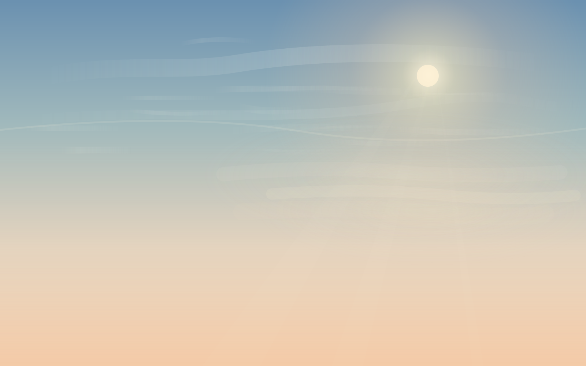
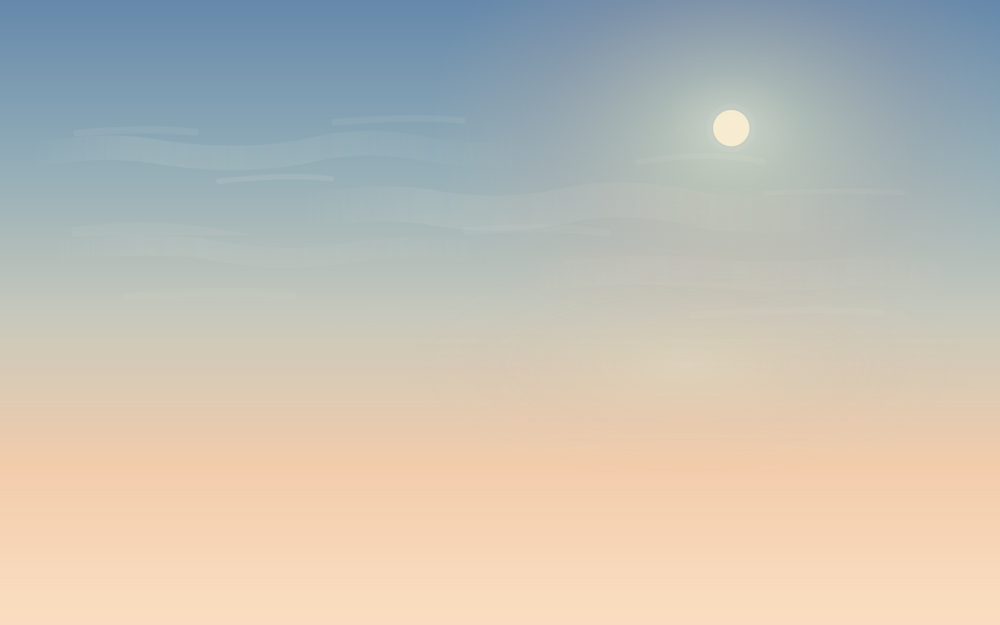
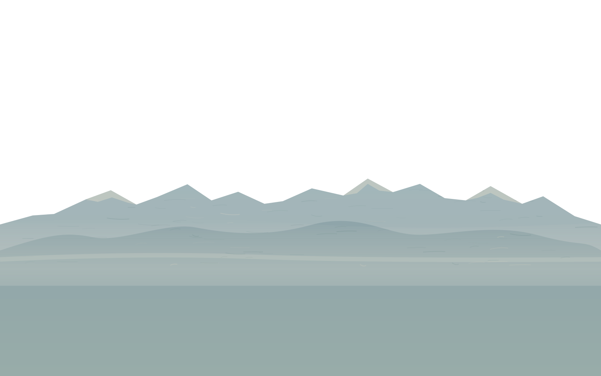
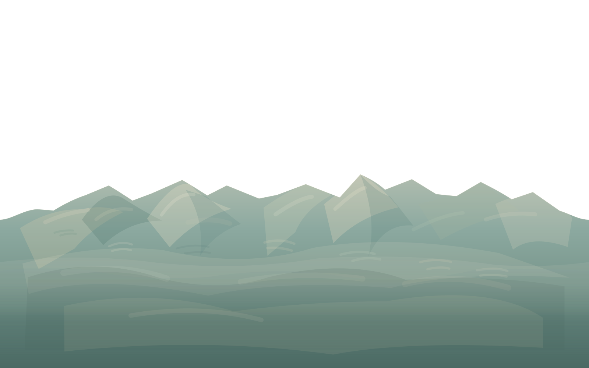
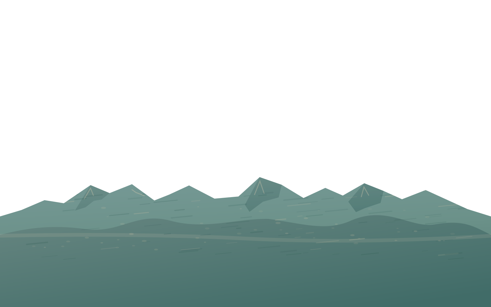
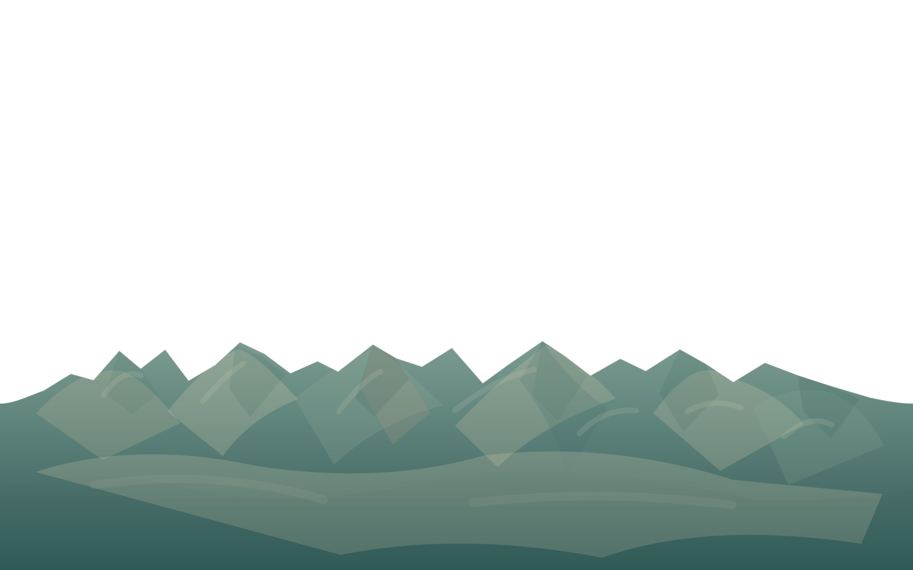
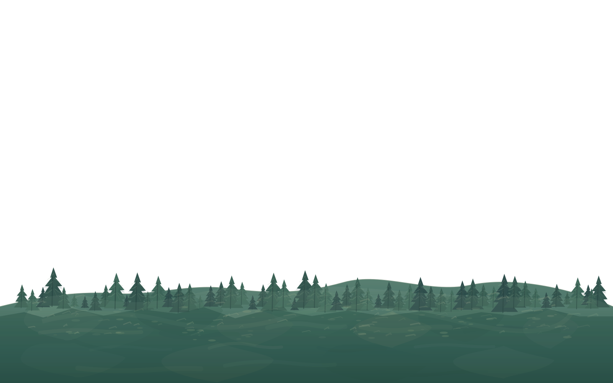
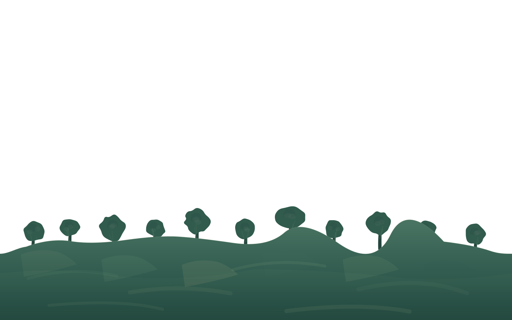
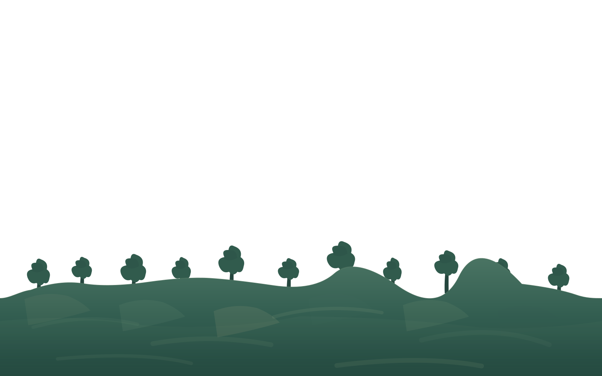
独立山谷图层与空间层次；需要实机截图审核，当前不是最终手绘纹理。
无 JavaScript 的五层场景对比。角色使用游戏中的透明 24 帧图集（帧 0、6、12、18 可切换）。天空、远景、中景、谷雾和近景森林均有独立试制 A/B（Alpha 24–30）；近景可用 #warm-near-alpha29 / #slate-near-alpha29 对照前版；新增 #warm-raster-alpha31 / #slate-raster-alpha31 为本地构建或 Draft CI 才可看的 PNG 像素肌理试制，默认仍为原始游戏 SVG；也可对比五层完整试制构图。试制图层不在游戏运行时使用；石柱仍为布局参考，不是正式 Canvas 材质。